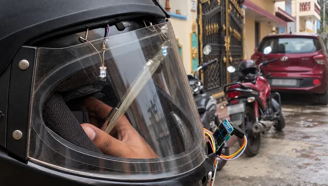
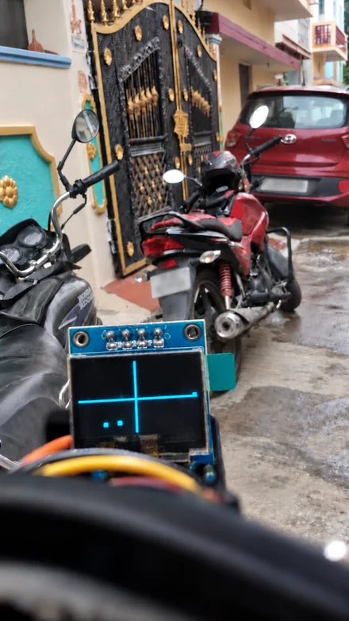

HELIVISION / INTELLECTUAL PROPERTY
Published patent application
Indian application 202541100066 · Under examination
Filed · Published
Application details in the project READMEASSISTIVE VISION / PROTOTYPE
HeliVision turns vehicle detections into a small map of the road scene, with a visor-mounted display and spoken alerts.
Concept, lead software & debugging; shared hardware integration
Raspberry Pi · Python · TensorFlow Lite
· Raspberry Pi prototype
2nd prize · Prakalp-2025, KMIT
HELIVISION / INTELLECTUAL PROPERTY
Indian application 202541100066 · Under examination
Filed · Published
Application details in the project READMEPROTOTYPE CHECK
During a basic outdoor walk, the helmet detected parked vehicles and vehicles passing by.
I’d seen how partial vision loss from optic nerve damage could make vehicles on one side difficult to notice, especially at night. It made me wonder whether a camera could help draw attention to them.
The idea was to keep the feedback small and immediate: where a vehicle appears, plus an audio cue. A helmet gave us a place to put that feedback near the rider’s field of view.
The detector supplies bounding boxes. Their positions become coordinates on the display, giving the road scene a much simpler representation.
Front view · OLED at the lower centre of the visor
A dedicated camera process supplies the latest view to the detector.
TensorFlow Lite detections are mapped to horizontal regions and display coordinates.
The OLED, directional indicators, and spoken alerts translate the output into feedback.
Two views of HeliVision: the assembled helmet and the display in the rider’s field of view. Open either image for a closer look.


Most of the debugging happened where components met: the camera library and operating system, the capture process and detector, then the detector and display.
An unresponsive text LCD prompted the switch to an OLED. Separating the services also made the prototype easier to inspect: I could check the latest frame, examine a detection, or clear old outputs independently.
The initial camera setup depended on older Raspberry Pi libraries. The final capture service uses Picamera2, resolving the compatibility issue and supplying recent frames to the detector.
camera_service.py updates a shared latest-frame image. vehicle_detection.py reads it independently and runs TensorFlow Lite inference. Overwriting that input kept capture separate from detection without continuously saving every incoming frame.
I used the centre of each detected bounding box to map vehicles into the OLED’s coordinates and horizontal regions. The display marks their positions, while directional indicators and spoken alerts provide additional cues. The OLED made this spatial view possible.
Detection outputs were useful while debugging, but we couldn’t keep saving them indefinitely. I added a cleanup service that keeps a recent buffer and deletes older outputs. Having capture, detection, and cleanup in separate services also made it easier to find where something had gone wrong.